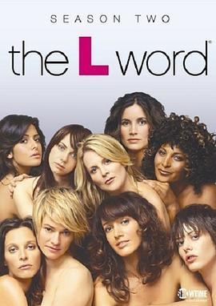

拉字至上 第二季 / The L Word Season 2
又名：拉字至上 第二季
作品信息
| 导演 | Rose Troche / Lynne Stopkewich / Clément Virgo / Lisa Cholodenko / Burr Steers / Jeremy Podeswa / Ernest R. Dickerson / Alison Maclean / Tony Goldwyn |
| 编剧 | 艾琳·柴肯 / Susan Miller / Angela Robinson / Joshua Senter |
| 主演 | Jennifer Beals / Erin Daniels / Leisha Hailey / Laurel Holloman / Mia Kirshner / Karina Lombard / Katherine Moennig / Sarah Shahi / Rachel Shelley |
| 类型 | 剧情 / 爱情 / 同性 |
| 制片国家/地区 | 加拿大 / 美国 |
| 语言 | 英语 |
| 首播 | 2005-02-20(加拿大) |
| 季数 | 2 |
| 集数 | 13 |
| 单集片长 | 44分钟 |
| IMDb | tt0623870 |
最后一次看到是 2026-08-12T21:13:08+08:00 · 豆瓣原页